WWDC 2023: Widgets
Find hereafter a detailed summary of two videos that belong to a taxonomy of some WWDC footages.
The original videos are available on the Apple official website (session 10027, session 10028).
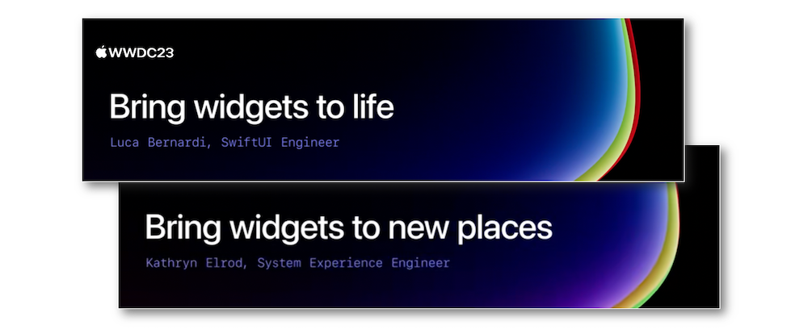
"Learn how to make animated and interactive widgets for your apps and games. We'll show you how to tweak animations for entry transitions and add interactivity using SwiftUI Button and Toggle so that you can create powerful moments right from the Home Screen and Lock Screen."
"The widget ecosystem is expanding: Discover how you can use the latest WidgetKit APIs to make your widget look great everywhere. We'll show you how to identify your widget's background, adjust layout dynamically, and prepare colors for vibrant rendering so that your widget can sit seamlessly in any environment."
Hereafter, the underlined elements lead directly to the playback of the WWDC video at the appropriate moment.
Overview #
Since their introduction in iOS 14, many useful enhancements have been made regarding the widgets, most notably this year with the use of an iPhone widget on a Mac.
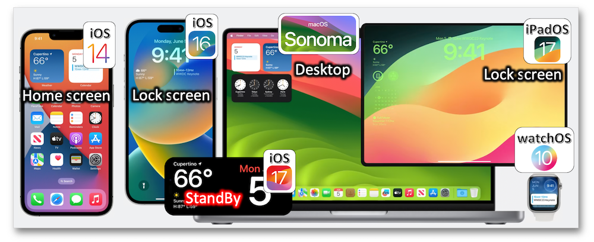
Content margins #
The content margins, which are available on all platforms that support widgets, were introduced this year as a new feature to replace the safe areas.
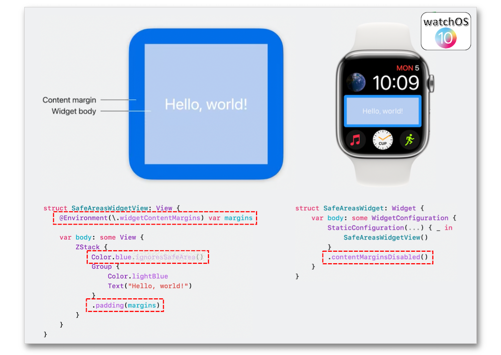
Background #
All platforms support automatically removing a widget's background.
Layout #
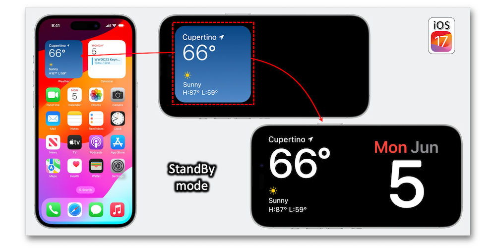
Even if the created widget's layout may be natively optimized, it's still possible to tailor the layout to fit the environment.
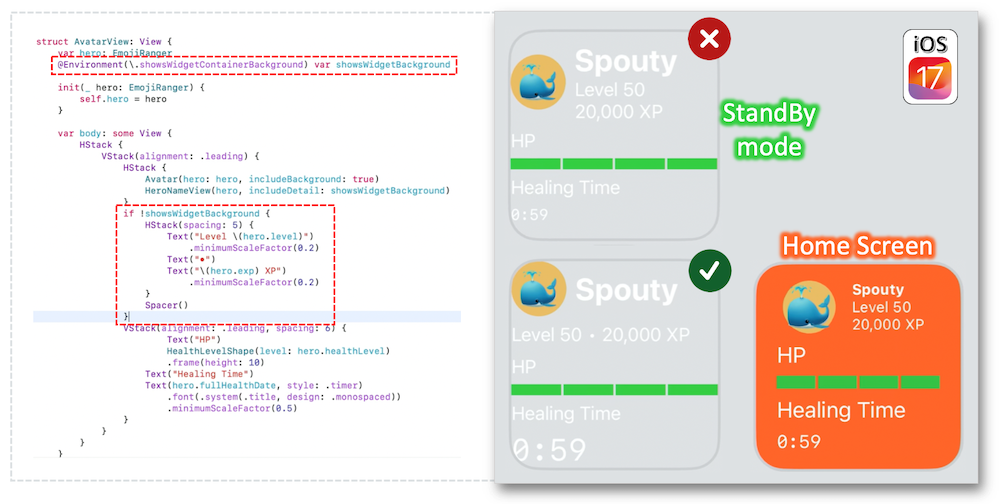
Vibrant mode #
This mode is used by the system for rendering widgets on the lock screen through the WidgetRenderingMode structure that's the best way to avoid possible illegible situations.
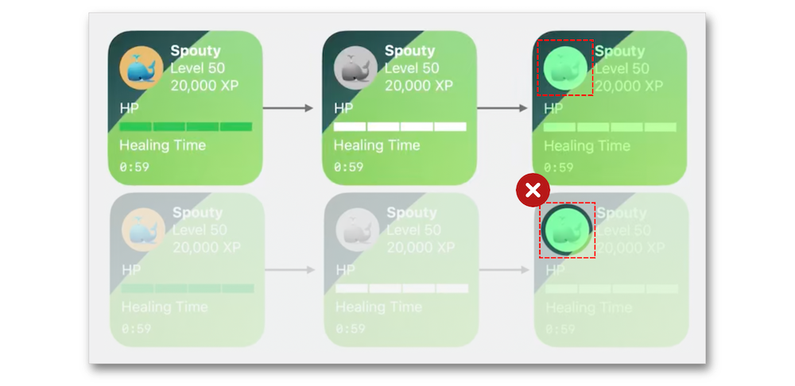
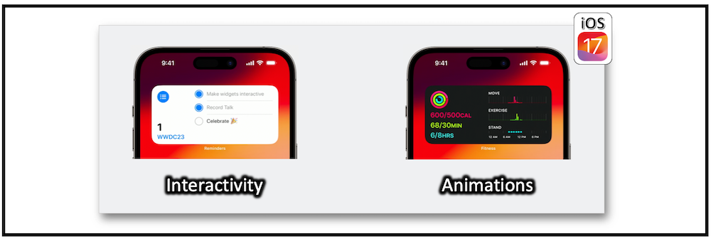
Animations #
Animations let the users perceive changes of the content and the outcome of their actions, which makes widgets more engaging.
In Xcode, the widgets make animations work in a specific way while they have no State and subsequently create a timeline for selecting the different views: SwiftUI determines where the differences are for living up the altered parts with default or customized animations used as transitions in the previews.
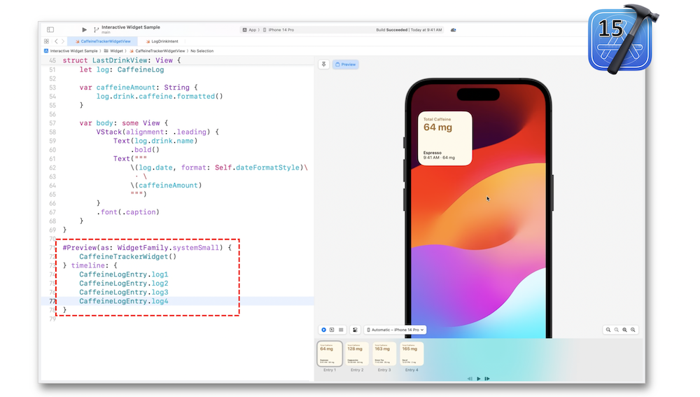
A simple text transition is created with few lines of code...
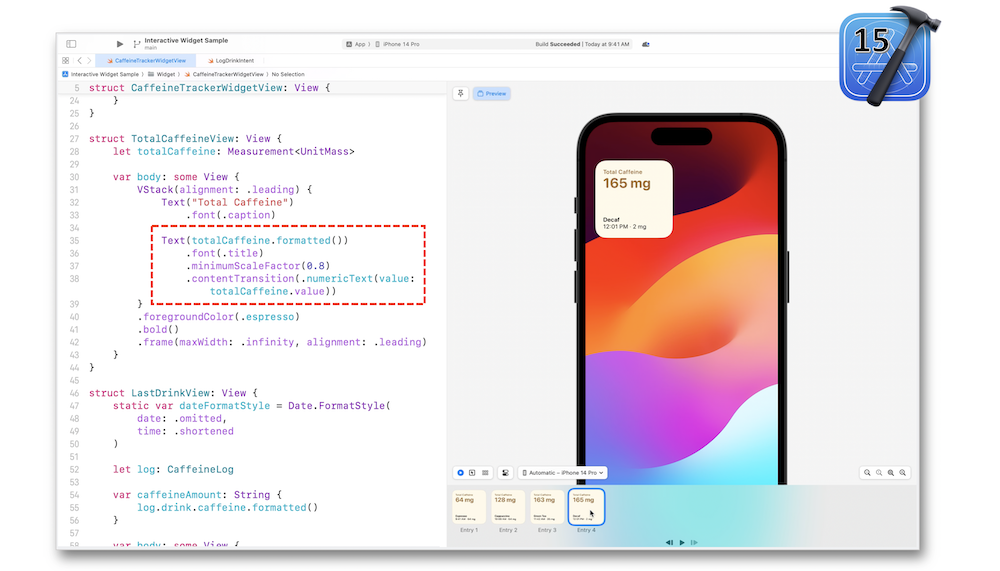
... that may also gives rise to some text animation styles.
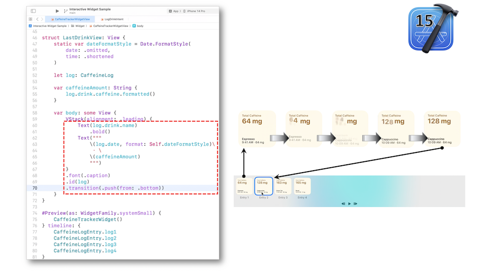
Note that this kind of animation may match a specific value as well.
Interactivity #
Interactivity lets the users directly modify the data in the widget through the most crucial actions in the app.
Architecture #
To the interactivity's end, a detailed architecture model of the widgets' functioning is highlighted, mostly built on the components of the previous section.
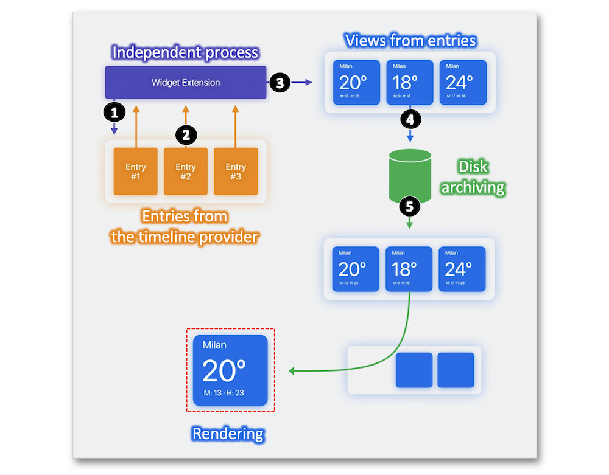
The best approach to update non-static data is to reload all widget timelines for a given kind using the reloadTimelines instance method.
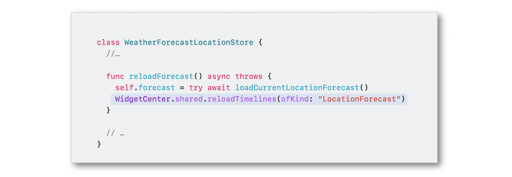
A few points have to be remembered regarding the widgets' architecture.
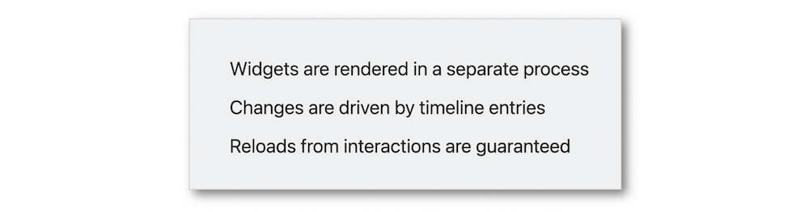
Implementation #
As discussed earlier, the process sharing for widgets comes with the controls' closures execution by SwiftUI in a different process space for which the inconvenient might be removed thanks to the AppIntent protocol to represent the action within the widget.
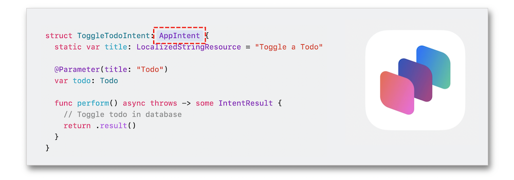
The number of widgets' controls is quite limited but the formal implementation is straightforward.
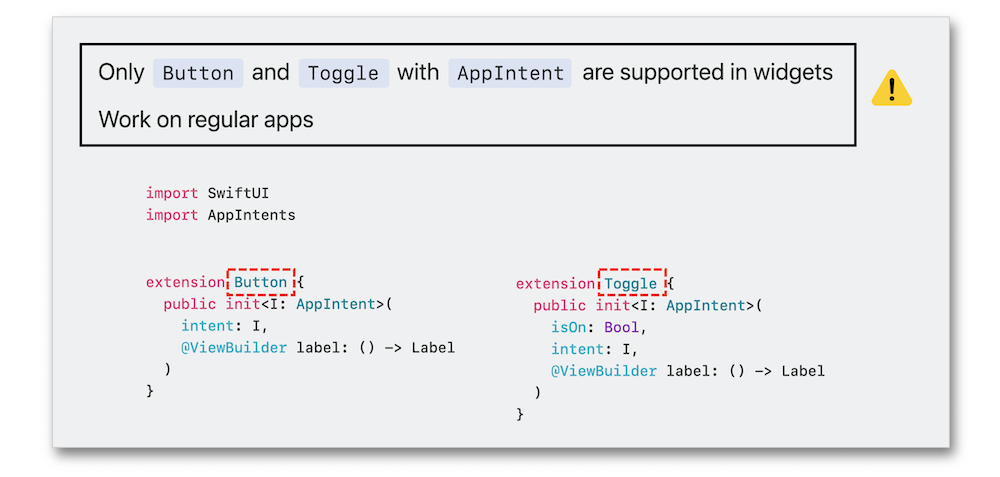
Introducing a button for interactivity may bring about new perspectives for pointing out the item existence through Shortcut and Siri.
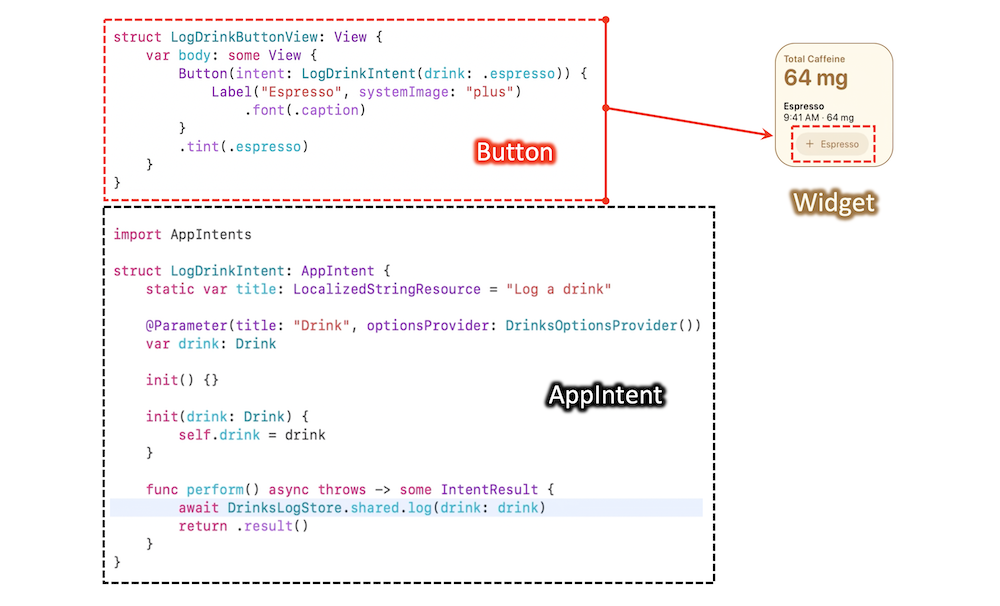
Finally, note that the invalidatableContent modifier is a good way to handle the update latency.
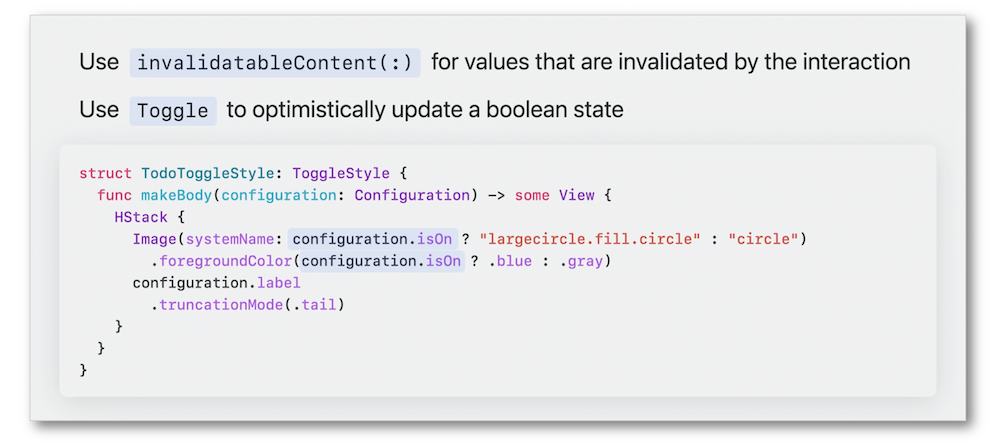